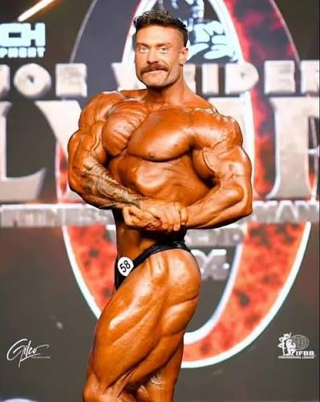
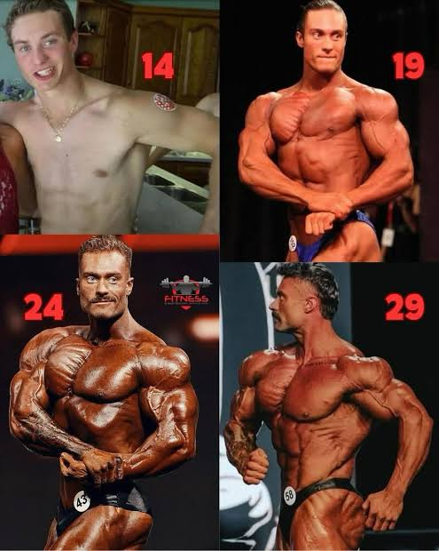
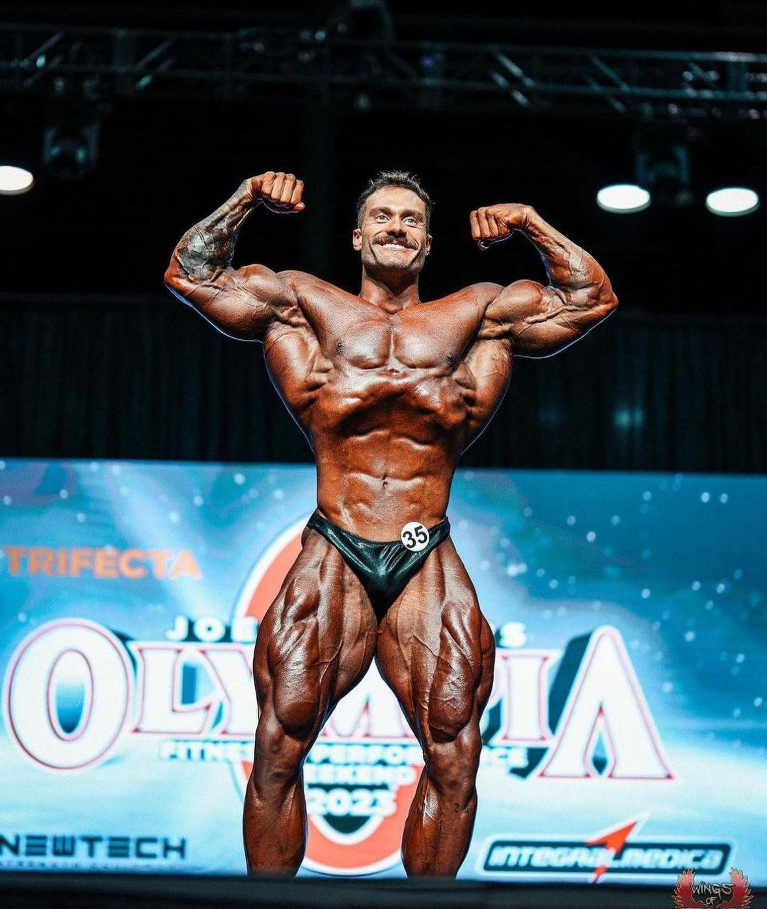

Chris Bumstead is widely know for his massive movement in the men's classic edition of the Mr. Olympian. Chris is widely considered to be the most aesthetically pleasing olympian anyone has ever seen, Chris has since retired from professional bodybuilding as something not a lot of bodybuilders talk about was affecting his body, steriod and drug abuse to be as massive as he was.
Chris Bumstead is known for being one of the most famous bodybuilders ever alive because of his choice to stop bodybuilding to ensure his health so that he could continue his life with his children and wife. Additionally, Chris is known as one of the greatest because he was prasied by Arnold schwarzenegger and many others for being considered the best classic mens physic of all time and that the standard for mens classic devision should be based off of his body. Because of this it solitifies him into the hall of fame when it comes to IFBB pros and one of the greatest and most famous bodybuilders of all time.


